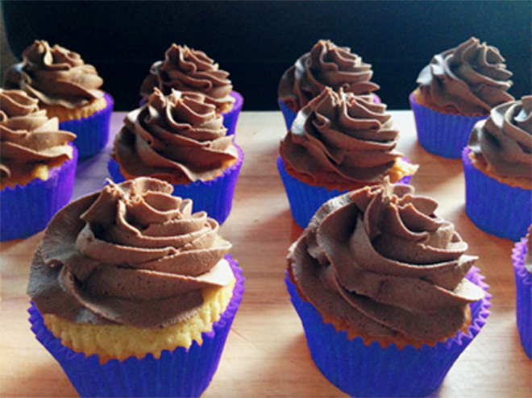
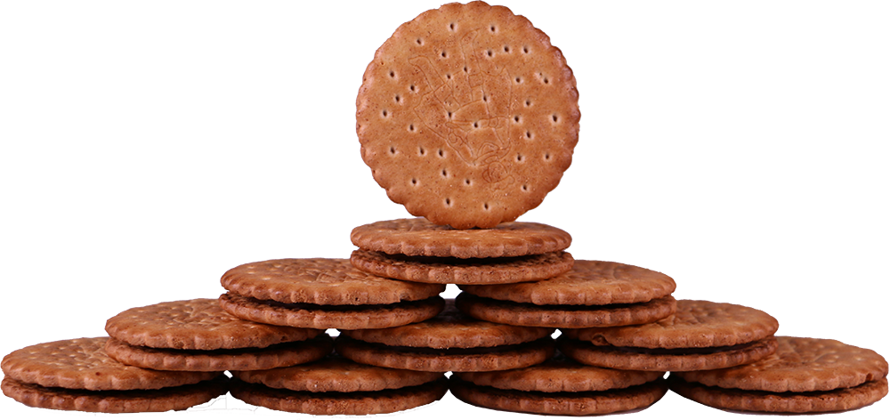

En gang for længe siden var der en fattig bondedreng, som gerne ville giftes med prinsessen. Han drog op til slottet og snakkede med kongen, men dog skulle han gøre noget til gengæld. Han fik til opgave at finde en skat i en grotte; den største skat af dem alle. Han drog ud og fandt hurtigt grotten, men blev mødt af kakaodragen! Et farligt, ildspyende væsen!
Men til hans overraskelse havde kakaodragen allerede skattekisten i hånden og gav den til ham. Da han åbnede den for at se skatten opdagede han at det var, og at det ikke kunne være andet end, chokoladekiks fra Prince! Han vendte straks tilbage til slottet og gav skatten til kongen. For hans heltemod fik han prinsessen og det halve kongerige.
De havde en stor bryllupsceremoni, og bondedrengen blev en rigtig Prince af riget Lu. Dagene gik og de levede lykkeligt, men prinsessen blev mere og mere utålmodig. Hendes far havde endnu ikke ladet hende smage kiksene. En aften stjal hun dem og tog prinsen med ind i det kongelig køkken hvor de bagte cupcakes med disse fantastiske kiks. De blandede det med mel og sukker og mælk! Selv nu kan du lave disse uimodståelige cupcakes derhjemme, men husk at spørge en voksen om hjælp!
Ud af denne opskrift kommer der 18 fantastisk velsmagende cupcakes!
Dette skal du bruge for at lave de lækreste cupcakes:
200 gram smør
200 gram sukker
2 teskefulde vanilje pulver
2 spiseskefulde mælk
300 gram mel
½ pakke gær
Og selvfølgelig skal du ikke glemme en halv kop knuste Prince Original kiks fra LU!
Det vil tage 15 minutter at gøre klar, efterfulgt af 20 minutter i ovn.
1. Forvarm ovnen til 180 grader, og rør smørret, sukkeret, vaniljen og mælken sammen.
2. Derefter tilsættes melet og røres indtil dejen er jævn. Efter det tilsætter du de knuste Prince Original chokoladekiks og mikser dem godt ind med dejen.
3. Nu hælder du dejen ned i formene og bager det i ovnen, indtil du kan stikke en tandstik i, og intet hænger fast. Så har du de bedste cupcakes i hele LU kongeriget!

Natten gik og de spiste sig tykke i dette dejlige bagværk. De faldt begge i søvn og blev taget på fersk gerning om morgen af kongen. Han tilgav dem men gemte de gode kiks væk.
Efter mange måneder havde kongen fundet ud af hvordan man kunne lave endnu flere af disse guddommelige kiks, og han gav dem rundt i hele kongeriget. Prinsen og prinsessen blev enige om at prøve at tage på den kongelige café og få en Prince milkshake. Denne milkshake var lavet på kun de lækreste af disse kiks og kun de fineste ingredienser. Hvis du selv vil lave den adelige Prince Milkshake, så kan du det og smage det som prinsessen og prinsen har. Men som med cupcakesene, så spørg en voksen om hjælp!
Efter prinsen havde bragt rigdom til kongeriget gik månederne, og så årene. Prinsen og prinsessen levede lykkeligt til deres dages ende, med masser af dejlige chokoladekiks og masser af andet godt i riget Lu.
